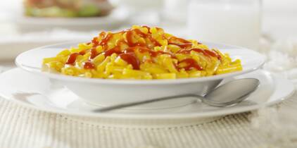

Pâtes au ketchup
Samia B.
Voici la première recette de notre blog... Les fameuses pâtes au ketchup !! Simple, rapide, efficace, voici les ingrédients à avoir :
- 250 g de pennes
- 100 g de sauce tomate
- 200 g de ketchup
- Sel, poivre
Recette :
1 : Faites cuire les pennes dans une casserole d'eau bouillante salée, en suivant les instructions du paquets.
2 : Faites chauffer 2 c. à soupe d'huile d'olive dans une poêle.
3 : Ajoutez la sauce tomate, le ketchup, du sel et du poivre et laissez mijoter pendant 5 minutes.
4 : Quand les pâtes sont cuites, égouttez-les et ajoutez-les à la sauce ketchup.
5 : Mélangez bien et servez sans attendre.
